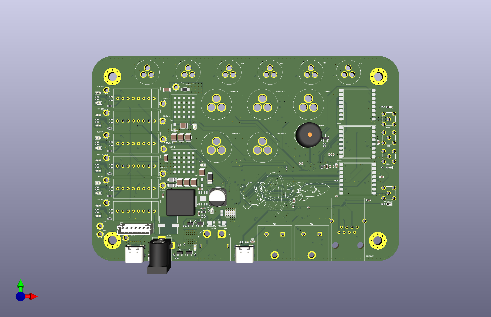

MOCH4 Engine Control Unit (ECU)
System Overview
The Rocket2 ECU is the central flight hardware for the MOCH4 vehicle. It manages power distribution, sensor data acquisition, and valve actuation for the rocket's liquid propulsion system.

Figure 1: Top-down render of the Rocket2 ECU v2.0 PCB.Stakeholders
- AV - Hardware: Reference for the 6-layer stackup signal integrity, JTAG debugging procedures, and general design logic/justifications.
- AV - Software: Mapping for SPI/I2C/UART buses and STM32 pin assignments.
- Propulsion: Solenoid limits, actuation behavior, and sensor scaling
- Launch Vehicle: Mounting specifications, structural constraints, and connector access.
Quick Specs
| Parameter | Value | Requirement Reference |
|---|---|---|
| Input Voltage | 24V DC | 24V Battery/GSE Requirement |
| Battery Life | > 4 Hours | System Operations Window |
| Logic Level | 3.3V | STM32 Standard |
| Mounting Pattern | 4x M3 holes with 3.2mm clearance | Avionics |
| Dimensions | 150mm x 100mm | Fits MOCH4 AV Bay |
Hardware Architecture & Layout
To ensure flight reliability, the hardware follows a strict isolation and integration strategy:
- 6-Layer Stackup: Dedicated ground planes (L2, L5) to shield logic (L3) from 24V power noise (L4)[cite: 617, 632]. See Electrical Design.
- Integrated Connectors: Standard HD15 and GX-series connectors are soldered directly to the board to eliminate wire-failure points.
- Component Zoning: The Battery Management System (BMS) and regulators are physically isolated on the left side, separated from RF antennas to minimize noise.
- Accessibility: All major test points and JTAG headers are accessible from the board's bottom side for post-integration debugging.
Core Functionality
- Propulsion: 5 channels of high-side solenoid switching.
- Instrumentation: Dual-redundant Pressure (PT) and Temperature (TC) collection.
- REDS: Emergency depressurization capable of switching between Battery and GSE power.
- Media: Integrated charging for the onboard Insta360 camera.
Debug & Failure Modes
- Visual Feedback: Onboard LEDs indicate 3.3V rail health and MCU heartbeat.
- Alarm: Integrated siren triggers on loss of GSE heartbeat or sensor failure (Note: Currently NOT IN USE).
- Safe State: All solenoids default to CLOSED on power loss or MCU reset to prevent unintended propellant flow.